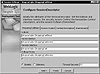

|
Developing Java Enterprise Applications
by Stephen Asbury ; Scott R. Weiner
Wiley Computer Publishing, John Wiley & Sons, Inc.
ISBN: 0471327565 Pub Date: 02/01/99

|
CHAPTER 17
Deploying Enterprise JavaBeans
One of the hard parts about learning to use Enterprise JavaBeans is the fact that you have to deploy them for testing. Deployment takes time, is server dependent, and may require you to shut down your test server each time you change the bean. This is a bit more complex than using an applet or application, which you can just run. The actual steps for deploying an Enterprise JavaBean will depend on the EJB host to which you are deploying. However, there are some basic steps that all hosts require and some guidelines for what the deployment process should accomplish.
NOTE: Once you familiarize yourself with these basic steps, you should review the documentation for your server to determine how to deploy the beans in your environment.
The EJB specification says that all beans are deployed with a descriptor that tells the host how to treat the bean. This descriptor is an object that provides an API for learning about the programmer’s intentions. Programmers package this descriptor into a jar file, then tell the host about the jar file. Again, the actual steps may vary, and some hosts may provide sophisticated tools for managing the deployment process.
| Table 17.1 Deployment Descriptor Attributes
|
|
| ATTRIBUTE
| DESCRIPTION
|
|
| Access Control Entries
| Security entries that indicate which users can access the bean or a particular method of the bean. You can, for example, provide a bean that everyone can access but that only managers can tell to perform a particular method.
|
|
| Bean Home Name
| The name that the bean will be registered under in JNDI.
|
|
| Control Descriptors
| Control attributes for transactions; these are discussed in detail in the text.
|
|
| Enterprise Bean Class Name
| The name of the Enterprise JavaBean’s Class.
|
|
| Environment Properties
| Key-value pairs that are passed to the bean via the EJBContext’s getEnvironment method.
|
|
| Home Interface Name
| The name of the Home interface.
|
|
| Is Reentrant
| This attribute applies only to entity beans and is used to define whether or not a transaction can reaccess a bean or whether a new transaction is required for each access.
|
|
| Remote Interface Name
| The name of the bean’s remote interface.
|
|
The DeploymentDescriptor
The main information about deployment is represented by an instance of javax.ejb.deployment.DeploymentDescriptor. This class defines a set of accessor methods for setting and getting information about the bean being deployed. Rather than list the methods, Table 17.1 provides descriptions of each of the deployment descriptor attributes. In most cases, you will be setting these attributes with a tool or in a file.
All of the examples on the CD-ROM include a file that contains the deployment descriptor information for the example beans. Also included is a build script for Windows NT that uses BEA WebLogic tools to generate the descriptor object from one of these files and serialize it to disk.
For example, the isPrime bean example has the following descriptor file. Remember that this file is BEA WebLogic specific and that other hosts may use other formats or tools. BEA WebLogic does provide a tool for creating these files as well.
(SessionDescriptor
beanHomeName isprime.IsPrimeHome
enterpriseBeanClassName isprime.IsPrimeBean
homeInterfaceClassName isprime.IsPrimeHome
remoteInterfaceClassName isprime.IsPrime
isReentrant false
stateManagementType STATELESS_SESSION
sessionTimeout 10; seconds
; end session EJBean-specific properties
(accessControlEntries
); end accessControlEntries
(controlDescriptors
(DEFAULT
isolationLevel TRANSACTION_SERIALIZABLE
transactionAttribute TX_REQUIRED
runAsMode CLIENT_IDENTITY
); end isolationLevel
); end controlDescriptors
(environmentProperties
; Application-specific environment properties
; end Application–specific environment properties
maxBeansInFreePool 100
maxBeansInCache 100
idleTimeoutSeconds 60
); end environmentProperties
); end EntityDescriptor or SessionDescriptor
Some of the properties in this file will be discussed in a moment, but notice that the file basically defines each attribute in the descriptor. To turn this file into a descriptor object, run the BEA WebLogic tool called weblogic.ejb.utils.DDCreator, which reads the file and generates a serialized object file. You can also use BEA WebLogic’s DeploymentTool, pictured in Figure 17.1, which uses wizards to set each of these values and create the serialized object.
Some of these properties, such as the number of beans to keep in the cache, are BEA WebLogic specific. Other hosts may provide their own special settings as part of the bean’s standard environment properties.
Session- and Entity-Specific Descriptors
Both session and entity beans actually use a subclass of DeploymentDescriptor for their deployment information. Session beans use an instance of SessionDescriptor, which adds a few attributes to the generic set.

Figure 17.1 The WebLogic EJB deployment tool.
First, session beans have a time-out. The time-out indicates how long the session should be held open by the server, even if the client and server have not communicated. For example, if the time-out is 10 minutes, and the person using the client goes to lunch, the session will end in the person’s absence. This value can be important when the session bean is performing sensitive operations and you don’t want to leave the session open for extended periods of time.
The second session-specific descriptor is its management type. This value is either stateless or stateful, indicating the session beans type. Entity beans use an instance of EntityDescriptor, which adds a few attributes to the generic set. First, entity beans must indicate which of their fields, if any, are container-managed. By indicating a field in this list, the bean is stating that it will not manage persistence of that field and expects the container to do so. Second, the entity bean must define a primary key class name. This is the name for the class of object used to identify the entity beans in the server. Normally, this is a custom class, as discussed in Chapter 16, “Programming Enterprise JavaBeans.”

|


){kind=link}
){kind=link}